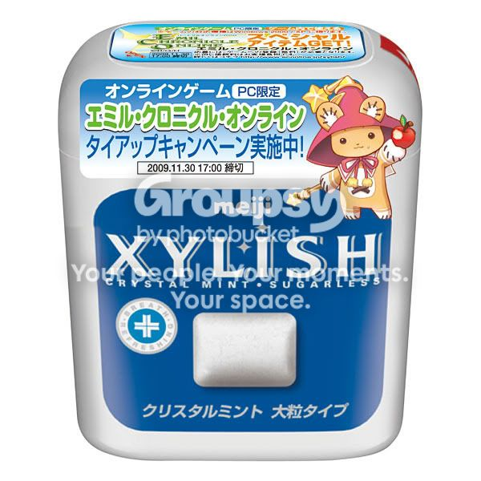
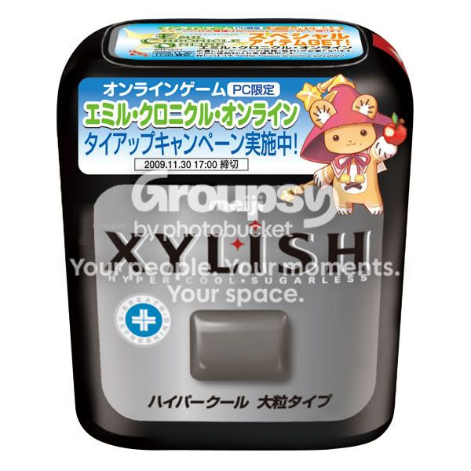
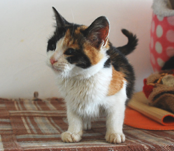

หน้า 1 จากทั้งหมด 1
ชื่อแมวๆ (ขุดแล้วขุดอีก) เครดิต"DayDreaming"

โพสต์แล้ว:
อังคาร 28 ก.ค. 2009 10:39 pmโดย ECO
DayDreaming เขียน:มิเกะ เนโกะมาตะตัวล่าสุดจากญี่ปุ่นมาแล้วจ้ากับเนโกะมาตะตัวล่าสุดของทางฝั่งญี่ปุ่น ซึ่งการจะได้มานั้นคุณต้องซื้อหมากฝรั่ง Xylish เสียก่อน แล้วเอาโค้ดที่อยู่บนกล่องมาเติมหน้าเว็ปเพื่อลุ้นรับไอเท็มต่างๆ โดยมีของแรร์เป็นมิเกะ เนโกะมาตะตัวใหม่ล่าสุดเลยล่ะ...


รูปมิเกะ เห็นครั้งแรกในบอร์ดเซิร์ฟ SEA ก็นึกว่าแค่เป็นการเอารูปมาตกแต่งผ่านโฟโต้ชอป... ที่ไหนได้ ของจริงเรอะ!!!
รูปหมากฝรั่ง Xylish จ้า



ขออนุญาตินะคร๊าป

MIKE เป็นชื่อเรียก แมวที่มีขน3สี คือสีขาว สีดำ กับสีน้ำตาล

โพสต์แล้ว:
อังคาร 28 ก.ค. 2009 10:42 pmโดย ECO
อันนี้ของเก่าน๊า
白＞ shiro ขาว ถ้าจะใช้คำว่าสีขาวต้องเรียก shiroi ชิโรย นะ
黒＞ kuro ดำ อันนี้ก็เหมือนกันนะ ถ้าจะใช้เรียกสี ต้อง kuroi คุโรย นะ
菫＞ sumire ม่วง อันนี้เป็นศัพย์ใหม่ เดิมที สีในภาษาญี่ปุ่นมีไม่มาก
จะมีแค่สีหลัก ไม่กี่สี ต่อมา พอมีสีใหม่เกิดขึ้น จึงใช้ ดอกไม้และผลไม้ เรียกแทนสีใหม่ๆนั้น และคันจิตัวนี้ ก็รวมอยู่กับดอกไม้ที่มีสีม่วง (กล้วยไม้)
จะใช้เรียกสีม่วงก็ได้ แต่ต้องเติมอิโระ ไม่นิยมใช้ ส่วนใหญ่จะเรียกทับศัพย์ อังกฤษไปเลยน้อ
จะใช้ baioretto (ไวโอเลต) ไปเลย ไม่ก็ murasaki 紫 มุราซากิอิโระ จ้า
空＞ sora ท้องฟ้า หรืออ่านว่า kara ที่แปลว่าว่างปล่าวก็ได้ (aoi แปลว่าสีฟ้านะจ๊ะ อ่านออกเสียงว่า อาโอย ก็คือ อาโออิ แบบเร็วๆนั่นแหละ)
桃＞ momo ลูกพีช / ลูกท้อ
緑＞ midori เขียว
新緑＞ shinryoku สีเขียวชอุ่มของช่วงต้นฤดูร้อน เขียวสดใส ถ้าเอาคำนี้ไปลงในgoogle หารูปจะพอเข้าใจ
茜＞ akane คันจิตัวนี้มักใช้กับชื่อคน (ชื่อคนมักจะไม่นิยมแปลความหมาย) แต่ถ้าจะแปลก็หมายถึงต้นไม้ชนิดหนึ่ง ที่ใช้รากมาทำสีย้อม จะได้สีแดง
ถ้าสีแดงจะใช้คันจิอีกตัว 赤 อ่าน aka สีแดงจะออกเสีย akai อะไค สีแดง
藍＞ ai พืชชนิดหนึ่งที่เอาเมล็ดมาทำเป็นสีย้อม จะได้สีน้ำเงิน
ส่วนคำว่ารัก ออกเสียง ไอ เหมือนกัน แต่ใช้คันจิตัวนี้ 愛 ใครดู นารูโตะ น่าจะคุ้นดี เพราะมันแปะอยู่บนหัว กาอะระ
山吹＞yamabuki พืชชนิดหนึ่ง ดอกมีสีเหลือง (สีเหลืองนั้น ญี่ปุ่นจะใช้คำว่า kiiroi คิโรย เป็นคันจิคนละตัวกัน แต่ก็สามารถใช้คำว่ายามะบุกิ เรียกสีได้ แต่ไม่นิยมใช้ จะใช้เป็นชื่อคนซะมากกว่า)
杏＞anzu แอปปริคอต (สีส้ม ญี่ปุ่นทับศัพย์อังกฤษน้อ เรียก ออเรนจิ อิโระ)
胡桃＞ kurumi ผลวอลนัท (สีน้ำตาลใช้คำว่า chairo 茶色 คันจิตัวนี้เอามาจากคำว่าน้ำชา)
若菜＞ wakana พืชผักที่แตกใบอ่อนในช่วงปีใหม่หรือต้นฤดูใบไม้ผลิ
色 iro แปลว่าสี
สามารถใช้ ตามหลังคำนามบางคำ เพื่อใช้เรียกสีได้ เช่นมิโดริอิโร หรือยามาบุกิอิโร ก็ได้
โมโมยโระ (สีของลูกท้อ) ก็ได้ สีหลักในญี่ปุ่น มีแค่ขาว ดำ ฟ้า แดง ไม่กี่สีหรอก พอเจอสีใหม่ๆ ก็จะใช้ชื่อของผลไม้หรือดอกไม้ แล้วเติมคำว่าสีต่อท้ายจ้า
ถ้าถามว่าทำไมต้อง ผลไม้หรือดอกไม้ ก็เพราะ เมื่อก่อน เราเอาสีย้อมมาจากพืชเป็นส่วนใหญ่
ส่วนสีที่ใช้ธรรมชาติมาเป็นสี นั่นเกิดมาจากกวีซะส่วนหนึ่ง ให้ดูไพเราะ และได้ความรู้สึกที่ละเอียดอ่อนลงไป เช่นสีฟ้า ก็จะมีสีฟ้า aoi สีฟ้าของท้องฟ้า ก็ใช้โซระอิโระ ก็ได้
แต่ไม่ค่อยมีใครพูดในทำนองที่หมายถึงสีฟ้ากันหรอก
แต่กับขาว ดำ แดง ฟ้า หรือบางสี ไม่ต้องก็ได้นะจ๊ะ แล้วแต่กรณีที่จะใช้น้อ
ในญี่ปุ่น จะแบ่งเป้น แอดเจอทีฟ อิ กัน นะ ใช้ต่างกันน้อ
ชื่อแมว อยู่บนสุดเป็นพี่ใหญ่นะ ล่างสุดเป็นน้องเล็กจ้า
ครอบครัว nekomata มีแค่ 12 ตัวนะ มิโดริ กับ ชินเรียวคุ นับเป็น 1 มิโดริจ้า สำหรับเนื้อเรื่องนะ
และสำหรับ ในเวปญี่ปุ่น จะเรียก ชินมิโดริ เนื่องจาก ตัวละครยังคงเป้นมิโดริอยู่ (งงไหมนะ)
เพียงแต่เป็นเวอร์ชั่นใหม่นั่นเอง
และ โมโมจัง ก็มี ชินโมโมด้วยเหมือนกัน หน้าแป้นแล้นมากๆ
ซึ่งจัดเป็นตัวละครเดียวกัน
แต่ในเกมจะเป็น ไอเทมคนละชิ้นกัน
โพสต์แล้ว:
พุธ 29 ก.ค. 2009 5:19 pmโดย ECO
อ้าวยังมีอีกเหรอเนี่ย คิดว่าหมดซะล่ะ น่ารักดีแหะ แต่ดูไม่ค่อยเหมือนแมวเลย
หูกะหาง จะออกไปแนวเสือ มือกะหน้าเหมือนคน ถือคทาปีกข้างเดียวอีกคนวาดลืมหรอะ
โพสต์แล้ว:
พุธ 29 ก.ค. 2009 7:47 pmโดย ECO
สงสัยเลยเลื่อนขึ้นไป ในรูปก้อข้างเดียว...
มันคงมีข้างเดียวอยุ่แล้วละมั้ง
โพสต์แล้ว:
พฤหัสฯ. 30 ก.ค. 2009 1:54 pmโดย ECO
(ps)smart เขียน:อ้าวยังมีอีกเหรอเนี่ย คิดว่าหมดซะล่ะ น่ารักดีแหะ แต่ดูไม่ค่อยเหมือนแมวเลย
หูกะหาง จะออกไปแนวเสือ มือกะหน้าเหมือนคน ถือคทาปีกข้างเดียวอีกคนวาดลืมหรอะ
ดูดีๆ คฑามันมีปีกสองสีนะ ขาว กับดำครับ
โพสต์แล้ว:
พฤหัสฯ. 30 ก.ค. 2009 5:45 pmโดย ECO
Zero-X เขียน:(ps)smart เขียน:อ้าวยังมีอีกเหรอเนี่ย คิดว่าหมดซะล่ะ น่ารักดีแหะ แต่ดูไม่ค่อยเหมือนแมวเลย
หูกะหาง จะออกไปแนวเสือ มือกะหน้าเหมือนคน ถือคทาปีกข้างเดียวอีกคนวาดลืมหรอะ
ดูดีๆ คฑามันมีปีกสองสีนะ ขาว กับดำครับ
เห้ยผีหลอก เหมือวานดูไม่มีอ่ะ หรือ เราลืมสังเกต
ขยี้ตาล่ะดูอีกรอบก็มีนี่หว่า ทำไมเมื่อวานไม่เห็นฟะ

โพสต์แล้ว:
ศุกร์ 31 ก.ค. 2009 10:55 amโดย ECO
ผีหลอก 555
โพสต์แล้ว:
พุธ 14 ต.ค. 2009 10:35 amโดย ECO
^
^
^
คนนี้เนียน ทุกกระทู้เลย แฮะ

โพสต์แล้ว:
เสาร์ 07 พ.ย. 2009 10:17 pmโดย ECO
โพสต์แล้ว:
พุธ 18 พ.ย. 2009 6:50 pmโดย ECO
โพสต์แล้ว:
พฤหัสฯ. 19 พ.ย. 2009 6:11 amโดย ECO
น่ารักทั้งน่านละ